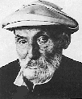
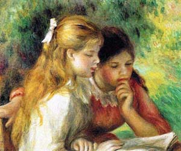
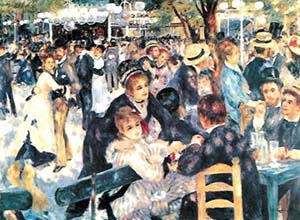

|  | Limoges 1841-1919 Cagnes-sur-Mer |
Fils d'une famille modeste, il commença à travailler dans un atelier de peinture sur porcelaine de 1854 à 1858. En 1864, il entra à l'école des Beaux Arts et à l'atelier de Gleyre avec Monet et Sisley. |
|
Sa peinture, sans concession, s'inspirait de la vie parisienne quotidienne. Son ami Diaz, le célèbre paysagiste, lui conseilla de peindre en plein air, à Barbizon, afin d'élargir sa palette. Là, il rencontra Pissarro et Cézanne. |
|
En 1869, il travailla avec Monet à Bougival, sur les bords de la Seine et développa définitivement la peinture impressionniste. Au cours d'un voyage en Italie sa rencontre avec la peinture de Raphaël et de l'école pompéienne fût déterminante. |
|
Ces nues aux formes généreuses semblaient tout droit sorties des grands musées Transalpins. |
|
A la fin de sa vie, une grave maladie rhumatismale le rendit invalide. |
|  |  |
| LA LECTURE | BAL DU MOULIN DE LA GALETTE |